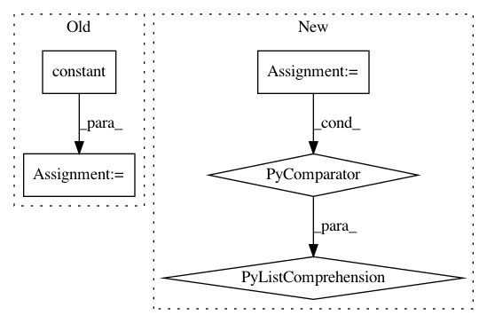

984d17836d7a6240942cd44f2f61c92a427bb9bb,niftynet/layer/crop.py,CropLayer,layer_op,#CropLayer#Any#,25
Before Change
[self.border * 2 + 1] * spatial_rank, 1, 1)).flatten()
// initializer a kernel with all 0s, and set the central element to 1
np_kernel = layer_util.trivial_kernel(kernel_shape)
crop_kernel = tf.constant(np_kernel, dtype=inputs.dtype)
// split channel dim
output_tensor = [tf.expand_dims(x, -1)
for x in tf.unstack(inputs, axis=-1)]
output_tensor = [tf.nn.convolution(input=inputs,
filter=crop_kernel,
strides=[1] * spatial_rank,
padding="VALID",
name="conv")
for inputs in output_tensor]
output_tensor = tf.concat(output_tensor, axis=-1)
return output_tensor
After Change
def layer_op(self, inputs):
spatial_rank = layer_util.infer_spatial_rank(inputs)
offsets = [0, *([int(self.border)] * spatial_rank), 0]
out_shape = [-1, *[int(d) - 2 * int(self.border) for d in list(inputs.shape)[1:-1]], -1]
output_tensor = tf.slice(inputs, offsets, out_shape)
return output_tensor
In pattern: SUPERPATTERN
Frequency: 4
Non-data size: 5
Instances
Project Name: NifTK/NiftyNet
Commit Name: 984d17836d7a6240942cd44f2f61c92a427bb9bb
Time: 2018-04-24
Author: z.eaton-rosen@ucl.ac.uk
File Name: niftynet/layer/crop.py
Class Name: CropLayer
Method Name: layer_op
Project Name: reinforceio/tensorforce
Commit Name: 603026f0325339c6412e5c045b5149f351bd1778
Time: 2019-02-06
Author: alexkuhnle@t-online.de
File Name: tensorforce/core/optimizers/multi_step.py
Class Name: MultiStep
Method Name: tf_step
Project Name: tensorflow/tpu
Commit Name: b6437e4dd115c5b290eb84b0620610b497293609
Time: 2020-05-12
Author: pengchong@google.com
File Name: models/official/detection/serving/inputs.py
Class Name:
Method Name: raw_image_tensor_input
Project Name: Microsoft/nni
Commit Name: 55b557f17385ca10b8a3e8fb8bbb0d3799906db5
Time: 2019-11-20
Author: 38930155+chicm-ms@users.noreply.github.com
File Name: src/sdk/pynni/nni/compression/tensorflow/builtin_pruners.py
Class Name: FPGMPruner
Method Name: _get_min_gm_kernel_idx